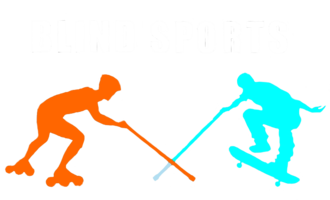

Instituto Blind Sports do Brasil

Instituto Blind Sports do Brasil
![Um grupo de oito ciclistas está posando para uma foto à noite em frente ao Estádio Municipal Paulo Machado de Carvalho, também conhecido como Estádio do Pacaembu, em São Paulo. Todos estão usando capacetes e roupas esportivas. A maioria veste camisetas pretas com detalhes em vermelho e a inscrição "Blind Sports" junto com um logotipo que parece representar esportes para pessoas com deficiência visual. Há uma bicicleta tandem (dupla) na frente do grupo, indicando que eles podem estar
participando de uma atividade inclusiva. As luzes do estádio estão acesas, iluminando a cena. Há
também um sinal de trânsito ao fundo, indicando restrições de estacionamento.](images/demo/ciclismo.jpg)


No Instituto Blind Sports do Brasil, nossa missão é promover a autonomia e inclusão das pessoas com cegueira e baixa visão por meio do esporte radical. Acreditamos que, com as adaptações necessárias e o apoio da sociedade, as pessoas cegas podem alcançar suas metas e realizar atividades extraordinárias, demonstrando que suas limitações não são obstáculos, mas sim desafios a serem superados.
Nossa visão é ser referência nacional na promoção de esportes radicais adaptados para pessoas com deficiência visual, criando um ambiente inclusivo onde todos possam compartilhar experiências e crescer juntos. Queremos quebrar barreiras e promover a igualdade, para que a sociedade enxergue as pessoas com deficiência não por suas limitações, mas pelas suas conquistas e habilidades.
Acreditamos que todas as pessoas, independentemente de sua condição física, devem ter as mesmas oportunidades de vivenciar a prática esportiva. Para isso, buscamos a integração entre pessoas com e sem deficiência, realizando atividades de forma coletiva, sem segregação.
Cada pessoa é única e deve ser tratada com respeito. Promovemos o entendimento e a convivência harmoniosa entre os participantes, valorizando a diversidade.
Incentivamos a independência e o empoderamento das pessoas com cegueira e baixa visão, provando que elas podem realizar qualquer atividade, desde que as condições necessárias estejam disponíveis.
Acreditamos no poder da colaboração. Nosso trabalho é movido por voluntários, que participam como guias, e pela generosidade de doações, que tornam nossas atividades possíveis.
O Instituto Blind Sports do Brasil é movido por um espírito de parceria e solidariedade. Oferecemos a oportunidade de praticar esportes radicais de forma segura e adaptada, e, para que isso seja possível, contamos com a ajuda de voluntários e doações. Nosso projeto não apenas transforma a vida das pessoas com deficiência visual, mas também sensibiliza a sociedade sobre o que significa viver em um mundo mais inclusivo.
Sua ajuda, seja como voluntário ou por meio de doações, é fundamental para que possamos continuar levando esses esportes e atividades transformadoras para muitas outras pessoas. Junte-se a nós e faça a diferença. Ao colaborar com o Instituto Blind Sports do Brasil, você contribui diretamente para a inclusão e o bem-estar de pessoas com cegueira e baixa visão, garantindo que elas possam viver experiências inesquecíveis e alcançar o que antes parecia impossível.